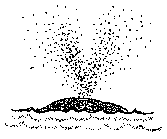

The Gray Whale Swimming and Breathing Cycle

In this swimming and breathing cycle two shallow dives are followed by a deep dive. Shallow dives are one to two minutes long. Deep dives are usually three to eight minutes long. |
|
|

Gray Whale Spout (side view) |
The gray whale's powerful fluke drives the whale forward with each undulation. |